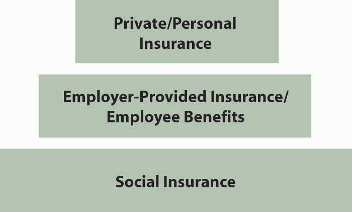
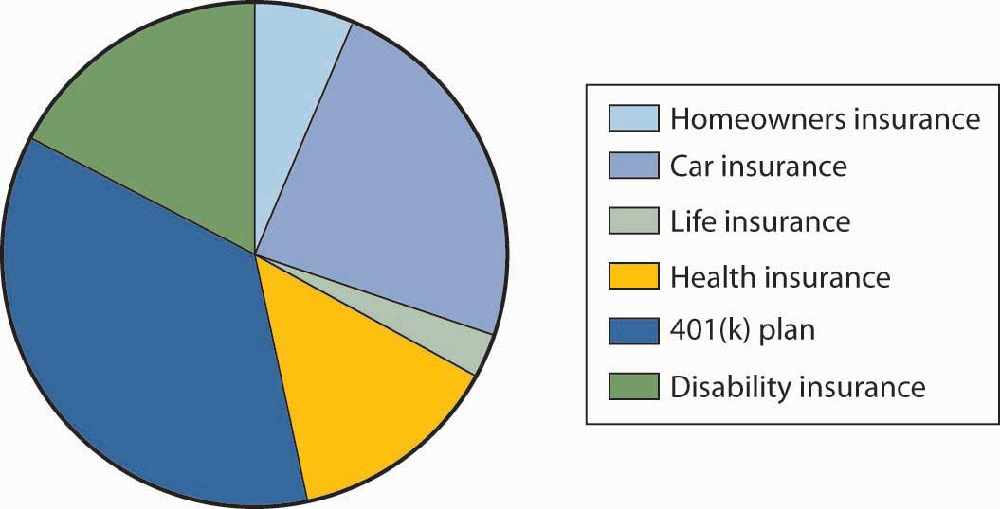
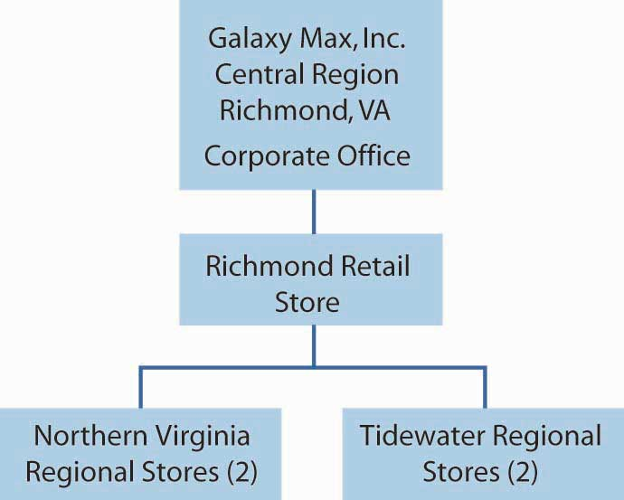
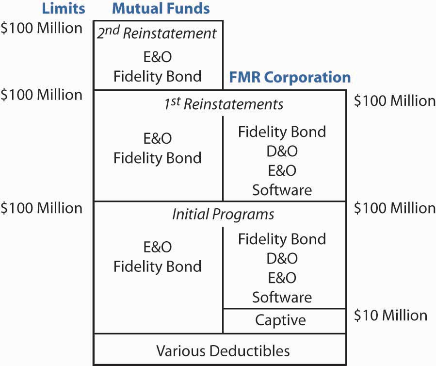
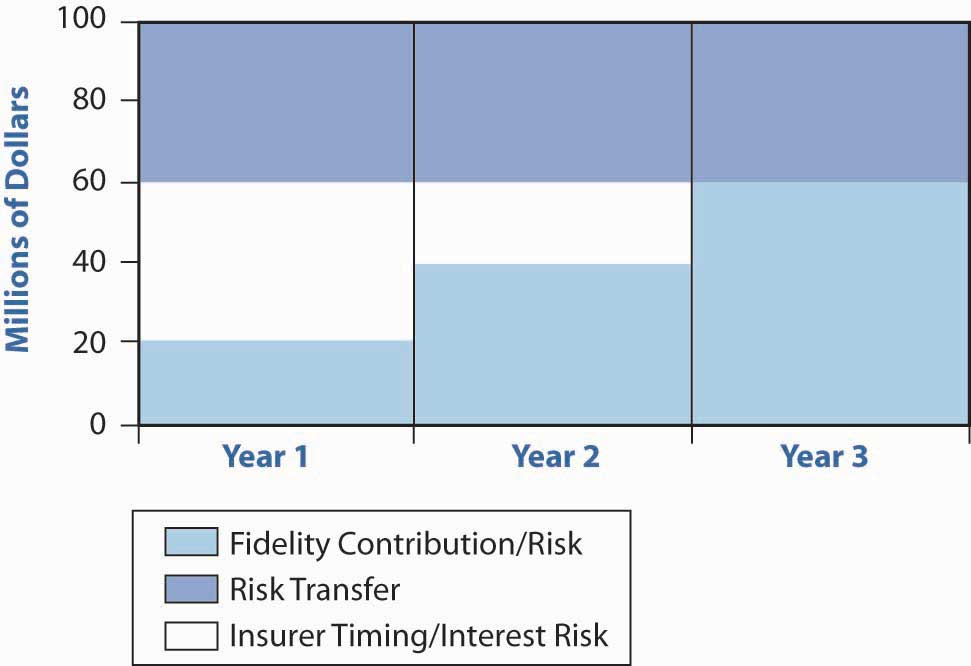
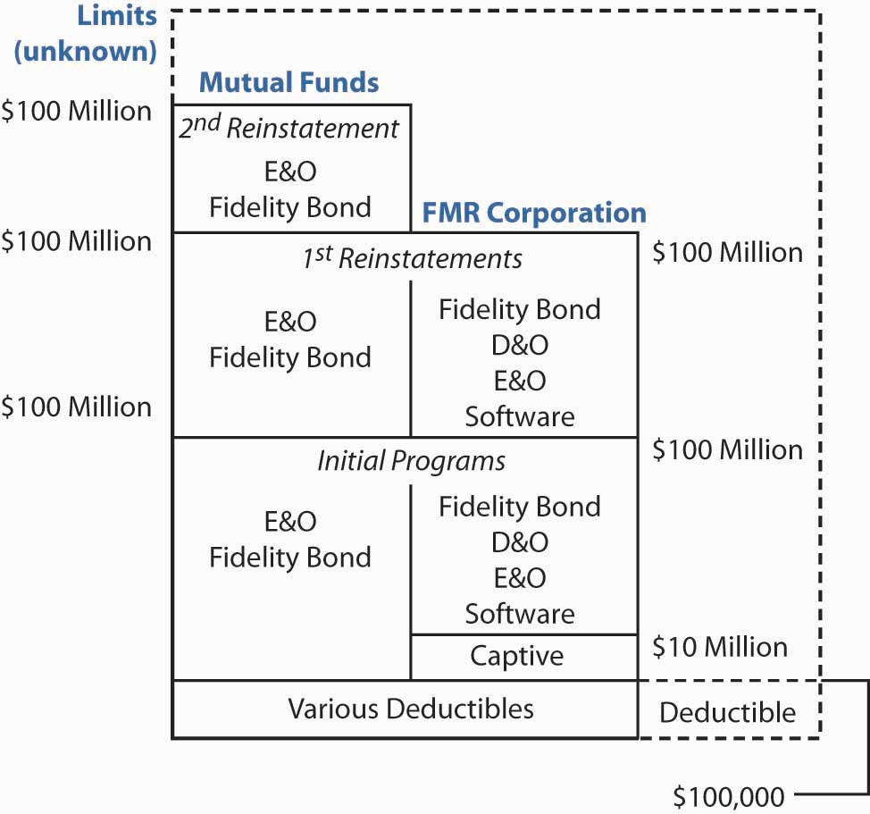

By this point, you have gained an understanding of the life cycle risks associated with mortality, longevity, and health/disability. You have learned about the social insurance programs such as Social Security and Medicare that help counter these risks. We have delved into life, health, and disability insurance products in Chapter 19 "Mortality Risk Management: Individual Life Insurance and Group Life Insurance" and Chapter 22 "Employment and Individual Health Risk Management" and discussed pensions in Chapter 21 "Employment-Based and Individual Longevity Risk Management". The availability and features of these products in group (employer-sponsored) or individual arrangements were also discussed. On the property/casualty side, we covered all the risks confronted by families and enterprises. We discussed the solutions using insurance for the home, automobile, and liability risks. Thus, you now have the tools needed to complete the holistic risk puzzle and the steps representing each layer of the risk management pyramid, from society on up to you as an individual.
With that said, this chapter is a departure from most, but it is vitally important. Our final lesson focuses on applying your knowledge and skills in the complete holistic risk management picture. In other words, you will now learn how to use your new tools. Practical case studies featuring hypothetical families and companies—some designed by fellow students—are utilized to fulfill this objective. The situations posed by these cases are ones that you may encounter in the roles you serve throughout your life, and they incorporate the insurance products and risk management techniques discussed throughout this text.
We begin first with a sample family risk management portfolio involving home, auto, life, health, and disability insurance coverage and planning for retirement. This case is for the personal needs of families. The second case focuses on the employer’s provided employee benefits package. It is designed as the benefits handbook of a hypothetical employer who provides more benefit options than current practices. In the last case, we broaden our understanding of enterprise risk management (covered in Part I of the text) by exploring the concept of alternative risk financing and the challenges faced by a risk manager in selecting among insurance products for commercial risk management needs.
At the conclusion of this chapter, your knowledge of risk management concepts will be reinforced and expanded. The chapter is structured as follows:
To understand the spectrum of personal losses to the families, we introduce two hypothetical families who were directly affected by the World Trade Center catastrophe. The families are those of Allen Zang, who worked as a bond trader in the South Tower of the World Trade Center, and his high school friend Mike Shelling, a graduate student who visited Allen on the way to a job interview. Both Mike and Allen were thirty-four years old and married. Mike had a six-year-old boy and Allen had three young girls.
Figure 23.1 Structure of Insurance Coverages
Both Allen and Mike were among the casualties of the attack on the World Trade Center. But their eligibility for benefits was considerably different because Mike was not employed at the time. In the analysis of the losses or benefits paid to each family, we will first evaluate the benefits available under the social insurance programs mandated in the United States and in New York. Second, we will evaluate the benefits available under the group insurance programs and pensions provided by employers. Third, we will evaluate the private insurance programs purchased by the families (as shown in Figure 23.1 "Structure of Insurance Coverages"). We will also evaluate the ways that families might attempt to collect benefits from negligent parties who may have contributed to the losses.
Recall from Chapter 18 "Social Security" that social insurance programs include Social Security, workers’ compensation, and unemployment compensation insurance (and, in a few states, state-provided disability insurance). In the United States, these programs are intended to protect members of the work force and are not based on need. The best-known aspect of Social Security is the mandatory plan for retirement (so-called old-age benefits). But the program also includes disability benefits; survivors’ benefits; and Medicare parts A, B, C, and D.
Table 23.1 "Benefits for Two Hypothetical Losses of Lives" shows the benefits available to each of the families. It is important to note that both Mike and Allen were employed for at least ten years (forty quarters). Therefore, they were fully insured for Social Security benefits, and their families were eligible to receive survivors’ benefits under Social Security. Each family received the allotted $255 burial benefit. Also, because both had young children, the families were eligible for a portion of the fathers’ Primary Insurance Amount (PIA). The Social Security Administration provided the benefits immediately without official death certificates, as described by Commissioner Larry Massanari in his report to the House Committee on Ways and Means, Subcommittee on Social Security.Social Security Testimony Before Congress, “House Committee on Ways and Means, Subcommittee on Social Security (Shaw) on SSA’s Response to the Terrorist Attacks of September 11, Larry Massanari, Commissioner,” http://www.ssa.gov/legislation/testimony_110101.html (accessed April 16, 2009).
You learned in Chapter 16 "Risks Related to the Job: Workers’ Compensation and Unemployment Compensation" that workers’ compensation provides medical coverage, disability income, rehabilitation, and survivors’ income (death benefits). Benefits are available only if the injury or death occurred on the job or as a result of the job. Because Allen was at the office at the time of his death, his family was eligible to receive survivors’ benefits from the workers’ compensation carrier of the employer.
Table 23.1 Benefits for Two Hypothetical Losses of Lives
| Mike’s Family | Allen’s Family | |
|---|---|---|
| Social insurance | ||
| Death benefits (survivors’ benefits) from Social Security | Yes | Yes |
| Workers’ compensation | No | Yes |
| State disability benefits | No | No |
| Unemployment compensation | No | No |
| Employee benefits (group insurance) | ||
| Group life | No | Yes |
| Group disability | No | Yes |
| Group medical | No | Yes (COBRA) |
| Pensions and 401(k) | Yes (former employers) | Yes |
| Personal insurance | ||
| Individual life policy | Yes | No |
The New York Workers’ Compensation Statute states, “If the worker dies from a compensable injury, the surviving spouse and/or minor children, and lacking such, other dependents as defined by law, are entitled to weekly cash benefits. The amount is equal to two-thirds of the deceased worker’s average weekly wage for the year before the accident. The weekly compensation may not exceed the weekly maximum, despite the number of dependents. If there are no surviving children, spouse, grandchildren, grandparents, brothers, or sisters entitled to compensation, the surviving parents or the estate of the deceased worker may be entitled to payment of a sum of $50,000. Funeral expenses may also be paid, up to $6,000 in Metropolitan New York counties; up to $5,000 in all others.”
The maximum benefit at the time of the catastrophe was $400 per week, less any Social Security benefits, for lifetime or until remarriage.Daniel Hays, “Workers’ Compensation Losses Might Top $1 Billion,” National Underwriter, Property & Casualty/Risk & Benefits Management Edition, September 2001, 10; See also New York State Workers’ Compensation Board at http://www.wcb.state.ny.us/ (accessed April 16, 2009). Thus, Allen’s family received the workers’ compensation benefits minus the Social Security amount. Recall from Chapter 16 "Risks Related to the Job: Workers’ Compensation and Unemployment Compensation" that under the workers’ compensation system, the employee’s family gives up the right to sue the employer. Allen’s family could not sue his employer, but Mike’s family, not having received workers’ compensation benefits, may believe that Allen’s employer was negligent in not providing a safe place for a visitor and may sue under the employer’s general liability coverage.
In Mike’s case, the New York Disability Benefits program did not apply because the program does not include death benefits for “non-job-injury.” If Mike were disabled rather than killed, this state program would have paid him disability benefits. Of course, unemployment compensation does not apply here either. However, it would apply to all workers who lost their jobs involuntarily as a result of a catastrophe.
Because Allen was employed at the time, his family was also eligible to receive group benefits provided by his employer (as covered in Chapter 20 "Employment-Based Risk Management (General)", Chapter 21 "Employment-Based and Individual Longevity Risk Management", and Chapter 22 "Employment and Individual Health Risk Management"). Many employers offer group life and disability coverage, medical insurance, and some types of pension plans or 401(k) tax-free retirement investment accounts. Allen’s employer gave twice the annual salary for basic group term life insurance and twice the annual salary for accidental death and dismemberment (AD&D). The family received from the insurer death benefits in an amount equal to four times Allen’s annual salary, free from income tax (see Chapter 19 "Mortality Risk Management: Individual Life Insurance and Group Life Insurance" and Chapter 21 "Employment-Based and Individual Longevity Risk Management"). Allen earned $100,000 annually; therefore, the total death benefits were $400,000, tax-free.
Allen also elected to be covered by his employer’s group short-term disability (STD) and long-term disability (LTD) plans. Those plans included supplemental provisions giving a small amount of death benefits. In the case of Allen, the amount was $30,000. In addition, his employer provided a defined contribution plan, and the accumulated account balance was available to his beneficiary. The accumulated amount in Allen’s 401(k) account was also available to his beneficiary.
Mike’s family could not take advantage of group benefits because he was not employed. Therefore, no group life or group STD and LTD were available to Mike’s family. However, his pension accounts from former employers and any individual retirement accounts (IRAs) were available to his beneficiary.
Survivors’ medical insurance was a major concern. Allen’s wife did not work and the family had medical coverage from Allen’s employer. Allen’s wife decided to continue the health coverage the family had from her husband’s employer under the Consolidated Omnibus Budget Reconciliation Act (COBRA) of 1986. The law provided for continuation of health insurance up to 36 months to the wife as a widow for the whole cost of the coverage (both the employee and the employer’s cost) plus 2 percent (as covered in Chapter 22 "Employment and Individual Health Risk Management").
For Mike’s family, the situation was different because Mike was in graduate school. His wife covered the family under her employer’s health coverage. She simply continued this coverage.
The third layer of available coverage is personal insurance programs. Here, the families’ personal risk management comes into play. When Mike decided to return to school, he and his wife consulted with a reputable financial planner who helped them in their risk management and financial planning. Mike had made a series of successful career moves. In his last senior position at an Internet start-up company, he was able to cash in his stock options and create a sizeable investment account for his family. Also, just before beginning graduate school, Mike purchased a $1 million life insurance policy on his life and $500,000 on his wife’s life. They decided to purchase a twenty-year level term life rather than a universal life policy (for details, refer to Chapter 19 "Mortality Risk Management: Individual Life Insurance and Group Life Insurance") because they wanted to invest some of their money in a new home and a vacation home in Fire Island (off Long Island, New York).
The amount of insurance Mike bought for his wife was lower because she already had sizeable group life coverage under her employer’s group life insurance package. Subsequent to Mike’s death, his wife received the $1 million in death benefits within three weeks. Despite not having a death certificate, she was able to show evidence that her husband was at the World Trade Center at the time. She had a recording on her voice mail at work from Mike telling her that he was going to try to run down the stairs. The message was interrupted by the sound of the building collapsing. Thus, Mike’s beneficiaries, his wife and son, received the $1 million life insurance and the Social Security benefits available. Because the family had sizeable collateral resources (non–federal government sources), they were eligible for less than the maximum amount of the Federal Relief Fund created for the victims’ families.
Allen’s family had not undertaken the comprehensive financial planning that Mike and his family had. He did not have additional life insurance policies, even though he planned to get to it “one of these days.” His family’s benefits were provided by his social insurance coverages and by his employer. The family was also eligible for the relief fund established by the federal government, less collateral resources.
To see how the catastrophe affected nearby businesses, we will examine a hypothetical department store called Worlding. In our scenario, Worlding is a very popular discount store, specializing in name-brand clothing, housewares, cosmetics, and linens. Four stories tall, it is located in the heart of the New York financial district just across from the World Trade Center. At 9:00 A.M. on September 11, 2001, the store had just opened its doors. At any time, shoppers would have to fight crowds in the store to get to the bargains. The morning of September 11 was no different. When American Airlines Flight 11 struck the North Tower, a murmur spread throughout the store and the customers started to run outside to see what happened. As they were looking up, they saw United Airlines Flight 175 hit the South Tower. By the time the towers collapsed, all customers and employees had fled the store and the area. Dust and building materials engulfed and penetrated the building; the windows shattered, but the structure remained standing. Because Worlding leased rather than owned the building, its only property damage was to inventory and fixtures. But renovation work, neighborhood cleanup, and safety testing kept Worlding closed—and without income—for seven months.
The case of insurance coverage for Worlding’s losses is straightforward because the owners had a business package policy that provided both commercial property coverage and general liability. Worlding bought the Causes of Loss—Special Form, an open perils or all risk coverage form (as explained in Chapter 11 "Property Risk Management" and Chapter 15 "Multirisk Management Contracts: Business"). Instead of listing perils that are covered, the special form provides protection for all causes of loss not specifically excluded. Usually, most exclusions found in the special form relate to catastrophic potentials. The form did not include a terrorism exclusion. Therefore, Worlding’s inventory stock was covered in full.
Worlding did not incur any liability losses to third parties, so all losses were covered by the commercial property coverage. Worlding provided regular inventory data to its insurer, who paid for the damages without any disputes. With its property damage and the closing of the neighborhood around the World Trade Center, Worlding had a nondisputable case of business interruption loss. Coverage for business interruption of businesses that did not have any property damage, such as tourist-dependent hotel chains and resort hotels,John D. Dempsey and Lee M. Epstein, “Re-Examining Business Interruption Insurance” (part one of three), Risk Management Magazine, February 2002. depended on the exact wording in their policies. Some policies were more liberal than others, an issue described in Chapter 15 "Multirisk Management Contracts: Business".
Because Worlding was eligible for business income interruption coverage, the owners used adjusters to help them calculate the appropriate amount of lost income, plus expenses incurred while the business was not operational. An example of such a detailed list was provided in Chapter 15 "Multirisk Management Contracts: Business". The restoration of the building to Worlding’s specifications was covered under the building owners’ commercial property policy.
As these examples show, complete insurance is a complex maze of varying types of coverage. This introduction is designed to provide a glimpse into the full scope of insurance that affects the reader as an individual or as a business operator. In our business case, if Worlding had not had business insurance, its employees would have been without a job to return to. Thus, the layer of the business coverage is as important in an introductory risk and insurance course as are all aspects of your personal and employment-related insurance coverages.
In addition, emphasis is given to the structure of the insurance industry and its type of coverage and markets. Emphasis is given to the new concept of considering all risks in an organization (enterprise risk management), not just those risks whose losses are traditionally covered by insurance.
The text has been designed to show you, the student, the width and variety of the field of risk management and insurance. At this stage, the pieces needed for holistic risk management now connect. As noted above, current events and their risk management outcomes have been clarified for you, whether the losses are to households or businesses. Furthermore, you now have the basic tools to build efficient and holistic risk management portfolios for yourself, your family, and your business.
The risk puzzle piecing together the risks faced by individuals and entities is presented one final time in Figure 23.2 "Complete Picture of the Holistic Risk Puzzle", which brings us full circle.
Figure 23.2 Complete Picture of the Holistic Risk Puzzle
In this section we elaborate on insurance and employee benefits selections of the hypothetical Smith family based on their specific needs:
The purpose of this project is to build a portfolio of risk management and insurance coverages for a hypothetical family. This report is typical of those produced by students as a group project in the author’s risk and insurance classes. The students present sections of the types of coverage they design throughout the semester and submit the complete project at the end of the semester as part of their final grade. The students live the project during the semester and provide creativity along with hands-on knowledge and information about the best risk management for their fictional families. Many groups develop special relationship with helpful agents who volunteer to speak to the class. The help that agents provide receives high marks from most students.
This report, as all the others produced by the students, considers property, auto, disability, life, health, and long-term care insurance, as well as retirement planning. The group project presented here does not involve the agent-customer relationship. Many other reports do include the relationship as a reason to buy from a specific company.
WeThis project was prepared by Kristy L. Blankenship, Crystal Jones, Jason C. Lemley, and Fei W.Turner, students in the author’s fall 2000 class in risk and insurance. Many other groups also prepared excellent projects, which are available upon request from the author. examined different types of insurance and selected the best coverage for our hypothetical family—the Smith family. Several insurance quotes were found through Insweb.com, and others were benefits offered by Virginia Power, a utility company in Richmond, Virginia. We also talked to some agents.
John is a thirty-five-year-old nuclear engineer who has been working for Virginia Power since 1999. His wife, Karen, is a thirty-year-old homemaker. They have been married for five years. John and Karen have a nine-month-old infant named Tristian. John and Karen are in good health. They are looking forward to having another child, but Karen has high pregnancy risk. This has to be taken into consideration when selecting health insurance coverage for the family. Their annual net income is $72,000 (John’s salary of $100,000, less taxes and other deductions). They own two cars. John drives a 1996 Toyota Corolla and Karen drives a 1997 Toyota Camry. They need good insurance coverage because John is the only one who is working. All the insurance providers examined have ratings of “A” or better in A.M. Best ratings.
John and Karen purchased a two-story single home for $150,000 in 1996. The house is located on 7313 Pineleaf Drive in Richmond, Virginia. The total footage is 2,014 square feet. There is a two-car attached garage. John and Karen decided not to renew their homeowners insurance with AllState Insurance because of the expensive premium and unacceptable customer service they experienced in the past. John did research on the Internet and found quotes from different companies. He was asked to give detailed information on the house. The house is located within 1,000 feet of a fire hydrant and it is one hundred feet away from a fire station. John promised to install a security system to prevent theft. Karen wanted extra protection on her precious jewelry worth $10,000, Ming china worth $5,000, and antique paintings valued at $7,000. They need scheduled personal property endorsements. Over the last five years, John and Karen’s house has appreciated by $10,000. They want to insure the home to 100 percent of its estimated replacement cost, which is $160,000, rather than 80 percent. In case of a total loss, the insurer will replace the home exactly as it was before the loss took place, even if the replacement exceeds the amount of insurance stated in the policy. Table 23.2 "Homeowners Insurance Plan Options" summarizes the coverage quoted by three insurance companies.
Table 23.2 Homeowners Insurance Plan Options
| Geico Insurance | Travelers Insurance | Nationwide Insurance | |
|---|---|---|---|
| Coverage A: dwelling replacement | $160,000.00 | $160,000.00 | $160,000.00 |
| Coverage B: other structures | $ 16,000.00 | $ 16,000.00 | $ 16,000.00 |
| Coverage C: personal property | $112,000.00 | $112,000.00 | $112,000.00 |
| Coverage D: loss of use | $ 48,000.00 | $ 48,000.00 | $ 48,000.00 |
| Coverage E: personal liability | $300,000.00 | $300,000.00 | $300,000.00 |
| Coverage F: guest medical | $ 2,000.00 | $ 2,000.00 | $ 2,000.00 |
| Deductible | $ 500.00 | $ 250.00 | $ 500.00 |
| Endorsements for collectibles and inflation guard | Yes | Yes | Yes |
| Annual premium | $ 568.00 | $ 512.00 | $ 560.00 |
| S&P rating | AAA | AA | AA− |
The Smith family decided to choose the insurance coverage provided by Travelers because of the company’s good rating and low premium, and because the premium includes a water-back coverage. Under this HO 3 (special form), dwelling and other structures are covered against risk of direct loss to property. All losses are covered except certain losses that are specifically excluded.
John drives a 1996 Toyota Corolla, which he purchased new for $18,109. He had one accident in the past four years in which he was hit by another driver. His estimated driving mileage within a year is 10,000. He drives 190 miles weekly to work. His car is not used for business purposes. Karen bought a new Toyota Camry in 1997 for $20,109. She has never had an accident. Her estimated mileage within a year is 7,500 and the weekly driving is 100 miles.
The Smiths used Insweb.com and found several quotes from various insurance companies that fit their needs. Table 23.3 "Auto Insurance Plan Options" summarizes the results of their research.
Table 23.3 Auto Insurance Plan Options
| Companies | Harford | Integon Indemnity | Dairyland |
|---|---|---|---|
| A.M. Best Rating | A+ | A+ | AA+ |
| Liability | 100,000/300,000/100,000 | 100,000/300,000/100,000 | 100,000/300,000/100,000 |
| Medical payments | $5,000 | $5,000 | $5,000 |
| Uninsured/underinsured motorist | 100,000/300,000/100,000 | 100,000/300,000/100,000 | 100,000/300,000/100,000 |
| Collision | $250 deductible | $250 deductible | $250 deductible |
| Other than collision | $500 deductible | $500 deductible | $500 deductible |
| Monthly premium | $160 | $210 | $295 |
The Smith family decided to choose the insurance coverage provided by Harford Insurance Company. Harford has an A+ rating, the coverage is more comprehensive, and the premium is significantly lower than the other two companies.
John has had this auto insurance for almost half a year. On the way to a business meeting one day, he is hit by an uninsured motorist. John’s car is badly damaged and he is rushed to the emergency room. Luckily, John has only minor cuts and bruises. John reports this accident to the police and notifies his insurer. The insurance company inspects and appraises the wrecked car. The Smiths’ uninsured motorists coverage covers John’s medical expenses (under bodily injury) and property damages caused by the accident. Harford Insurance considers John’s car a total loss and pays him $14,000 (fair market value less the deductible).
The Smith family decided to purchase long-term disability (LTD) insurance for John because he is the only breadwinner in the family. In the event of an accident that would disable John and leave him unable to work, the family would need adequate coverage of all their expenses. The LTD benefit provided by John’s employer, Virginia Power, would pay 50 percent of John’s salary in case of his total disability; however, the family would like to have more coverage.
TransAmerica, an insurance broker that prepares coverage for Erie and Prudential Life, prepared two plans for the Smiths as shown in Table 23.4 "Long-Term Disability Plan Options". Both plans provided benefits to age sixty-five with a ninety-day waiting period. Both plans offer the same level of optional benefits, including residual disability and an inflation rider.
Table 23.4 Long-Term Disability Plan Options
| Erie | Prudential | |
|---|---|---|
| Benefit period | To age sixty-five | To age sixty-five |
| Waiting period | 90 days | 90 days |
| Monthly benefit | $2,917.00 | $3,700 |
| Base annual premium | $1,003.49 | $1,262.10 |
| Total annual premium | $1,414.88 | $1,783.92 |
| Optional benefits | ||
| Residual disability | $183.25 | $232.43 |
| Inflation rider | $228.14 | $289.38 |
The Smith family chose additional disability coverage provided by Erie because of the lower premium, lower residual disability cost, and lower inflation rider cost.
The Smith family realized they needed to invest in additional term life insurance for John because his employer provided only term life coverage in the amount of one times his salary, $100,000. They did not need to worry about life insurance for Karen because her parents bought a ten-year level term coverage in the amount of $250,000 on Karen’s life when Tristian was born. They told Karen that an untimely death would mean an economic loss to the family because John would likely have to hire help for housekeeping and child care.
As noted above, John is thirty-five years old and in very good health. He enjoys working out at the gym after work at least three days a week and has never been a smoker. John’s family history shows no serious health problems, and most of his relatives have lived well into their seventies.
To decide how much life insurance is needed for John, he and Karen worked on a needs analysis with some friends who are familiar with financial planning. They came to the conclusion that he will need to purchase $300,000 additional coverage. The following breakdown shows why they believe they need this amount of coverage:
| Cash needs | ||
| Funeral expenses | $12,000 | |
| Probating will and attorney fees | $3,000 | |
| Income needs | ||
| To get Karen and Tristian on their feet | $192,000 | ($4,000 monthly for 4 years) |
| Special needs | ||
| Balance on mortgage | $120,000 | |
| College fund for Tristian | $50,000 | |
| Emergency fund | $75,000 | |
| Total family needs | $452,000 | |
| Current financial assets | ||
| Savings balance | $20,000 | |
| 401(k) current balance | $32,000 | |
| Group term insurance | $100,000 | |
| Total current financial assets | $152,000 | |
| Additional coverage needed | $300,000 | |
Virginia Power offers additional life insurance that their employees can purchase through North American Life. The Smiths wanted to compare prices of additional coverage, so they looked on the Internet. They found that the Western-Southern Life and John Hancock plans to fit their budget and their needs. All three plans are compared in Table 23.5 "Life Insurance Plan Options".
Table 23.5 Life Insurance Plan Options
| North American (VA Power) | Western-Southern Life | John Hancock | |
|---|---|---|---|
| Amount | $300,000 | $300,000 | $300,000 |
| Term period | 20 years | 20 years | 20 years |
| Initial monthly premium | $21.00 | $19.95 | $18.50 |
| Initial rate guarantee | 5 years | 20 years | 20 years |
| S&P rating | AA | AAA | AA+ |
The Smith family decided to go with Western-Southern Life because of its higher rating, low premiums, and guaranteed initial rate for twenty years. John will have to prove evidence of his insurability when he purchases the coverage (unlike the group life coverage provided by the employer). This is not a major issue to John because he is in excellent health. If John were to leave the company, his life insurance would terminate, but he could convert it to an individual cash-value policy at that time.
Virginia Power offers its employees two preferred provider organization (PPO) options and one health maintenance organization (HMO) option. The Smith family decided to choose one of the PPO plans as opposed to an HMO plan because Karen and John are planning to have another child and, considering her high-risk status, prefer to have more choices and out-of-network options if necessary.
A PPO is a network of health care providers who have agreed to accept a lower fee for their services. A PPO plan gives one the flexibility to select a network provider without having to select a primary care physician to coordinate care or to go out-of-network with higher copayments. All of Virginia Power’s benefit coverage is provided by Anthem, a Blue Cross/Blue Shield company with A++ rating. Employees of Virginia Power and their family members are covered on the date employment begins. Benefits will be provided at the in-network level to an employee who lives outside the network’s geographic area. In-network participants must receive preventative care benefits from PPO providers. Participants who live outside the network’s geographic area may receive these services from PPO and non-PPO providers. Table 23.6 "Health Insurance Plan Options" compares the benefits of the two PPO options.
Table 23.6 Health Insurance Plan Options
| Feature | Medical Plan 1 | Medical Plan 2 |
|---|---|---|
| In-Network/Out-of Network | In-Network/Out-of Network | |
| Annual deductible | $572 | $1,146 |
| Monthly premiums (employee’s portion for the whole family) | $91.41 | $41.13 |
| Out-of-pocket maximum | $2,288/$4,004 | $4,584/$8,022 |
| Lifetime maximum benefits | Unlimited | $1,000,000 |
| Participant coinsurance | 20%/40% | 20%/40% |
| Preventative care | 100% after $10 copay for generalist; $20 copay for specialist | |
| Prescription drugs | ||
| —Deductible | None | None |
| —Participant coinsurance | 20% | 20% |
| —Out-of-pocket maximum | $700 | $700 |
| Out-patient mental health | After deductible, next 20% of $500 of expenses, then 50% of the balance for the remainder of the plan year; no out-of-pocket maximum | |
| In-patient mental health | Up to 30 days per person per year; 60 days maximum per person, per lifetime, for substance abuse | |
| Chiropractic | Maximum benefits $500 per person per year | |
The Smith family chose Plan 1 because of the lower deductible and lower out-of-pocket maximum compared to Plan 2. Also, the lifetime maximum benefit is unlimited.
While vacationing with his family in Orlando, Florida, John keeps up his morning jogging routine. On the third day of the vacation, John suffers chest pains while running and collapses. John is rushed by ambulance to a nearby hospital where he is diagnosed with a bronchial infection. X-rays and lab work total $300. The family pays 20 percent of the bill because they had met their deductible for the year. Their total out-of-pocket expenses for the visit are $60. Though disappointed that he can’t jog for a week or two, John is thankful that, even out of state, he is able to have expert medical care and return to his family to enjoy the remainder of his vacation.
John and Karen are very young, so they do not perceive the need for investing in long-term care. Virginia Power doesn’t offer this option. However, John has heard rumors that long-term care might be offered next year. If Virginia Power does begin offering long-term care, John will consider participating in it.
The Smiths decided to invest in the 401(k) plan offered by Virginia Power. Virginia Power matches contributions at 50 percent. John chose to defer 4 percent of his salary ($240 monthly). When added to Virginia Power’s 2 percent, or $120, the monthly total is $360. The contribution is invested in mutual funds. John’s 401(k) current balance is $32,000 and he hopes he will be able to invest it wisely. He can begin withdrawing his retirement benefits at age fifty-nine and a half with no penalties if he wishes.
Table 23.7 "Smith Family Income Statement" and Table 23.8 "Smith Family Net Worth" depict the Smith family’s finances. Figure 23.3 "Monthly Cost Allocation" shows the costs of insurance premiums in reference to the Smiths’ income.
Table 23.7 Smith Family Income Statement
| Monthly salary after taxes | $6,000 | |
| Mortgage | $1,200 | |
| Utilities | $350 | |
| Homeowners insurance | $42.67 | |
| Car insurance | $160 | |
| Life insurance | $19.95 | |
| Health insurance | $91.41 | * |
| $401(k) plan | $240 | |
| Disability insurance | $117.91 | |
| Baby needs | $300 | |
| Groceries | $500 | |
| College fund | $100 | |
| Entertainment | $400 | |
| Other expenses | $200 | |
| Possible expenses | $800 | |
| Total | $4,522 | |
| Potential savings | $1,478.07 | |
| * Health premiums are paid on a pretax basis into a premium conversion plan. | ||
|---|---|---|
Table 23.8 Smith Family Net Worth
| Assets | |
| Savings | $20,000 |
| 401(k) current balance | $32,000 |
| House | $160,000 |
| Collectibles | $22,000 |
| Total assets | $234,000 |
| Liability | |
| Mortgage payable | $120,000 |
| Net assets | $114,000 |
Figure 23.3 Monthly Cost Allocation
With the help from all group members working on the project, the Smith family is able to choose the best coverage they can get from various insurance plans. Their homeowners insurance is provided by Travelers Insurance Company; their auto is covered by Harford Insurance Company. They bought additional life insurance from Western-Southern Life Company and additional long-term disability from Erie. Virginia Power provides good health care coverage, term life insurance, a 401(k) retirement plan, and long-term disability. The Smith family chose insurance plans that best fit their needs.
In this section you studied how the needs of a hypothetical family affect the selection of insurance coverage and employee benefits:
In this section we elaborate on the benefits and plan structure that can be expected in a sample employee benefits portfolio:
This case, like Case 1, is a group project that is part of employee benefits classes taught by the author of this textbook. Following is the employee benefits portfolio of a compilation of the ten groups of the fall 2002 class (and some of the fall 2000 class), in the words of the students.The work of the following students is reflected in this case: Donna Biddick, Lavonnia Bragg, Katrina Brand, Heather Cartes, Robert Cloud, Maria Conway, Thomas Dabney Clay, Lillian Dunlevy, Daniel Fleming, Shannon Fowlkes, Caroline Garrett, Barbara Guill, Steven Hall, Georgette Harris, Shirelle Harris, Tyron Hinton, Tiffany Jefferson, Tennille McCarter, Pamela Nicholson, Hiren Patel, Susan Shaban, Carolyn Shelburne, Gaurav Shrestha, Stephanie Soucy, Christopher Speight, Cassandra Townsend, Geoff Watkins, and Tresha White, from fall 2002. Also included is the work of Margaret Maslak and Shelisa Artis from fall 2000. The case is a typical project that lasts for the students throughout the semester. The students present portions of the case as the material is covered in class. In most cases, the whole employee benefits portfolio of the hypothetical company created by the students is presented at the conclusion of the semester as part of the final grade. This case does not provide a long-term care coverage plan. Most of the retirement plans offered by the hypothetical employers of these projects are not realistic in terms of the amounts and variety. The students are requested to provide a defined benefit plan, a defined contribution plan, and a 401(k) plan in order to experience the workings of these plans. The students did not offer a complete cafeteria plan—only a flexible spending account.The students used information from the following companies and sources: Dominion Co., www.dominion.com; Dominion Virginia Power, http://www.dom.com/; Phillip Morris, USA, http://www.philipmorrisusa.com/en/cms/Home/default.aspx; Virginia Retirement System, www.state.va.us/vrs/vrs-home-htm; Henrico County, Virginia, www.co.henrico.va.us.; Minnesota Life, www.minnesotalife.com; A. M. Best Company, ambest.com; Federal Reserve Board, http://www.federalreserve.gov/; Stanley Corp.; Ethyl Corporation, http://www.ethyl.com/index.htm; Aetna, www.aetna.com; Anthem, http://www.anthem.com/; CIGNA, www.cigna.com; and more.
The Board of Directors and the corporate executives of Galaxy Max, Inc., have developed a comprehensive benefits package to meet the needs of our employees and their families. This handbook includes a brief overview of the organization and its structure and a detailed description of benefits related to group life insurance, health care, dental and vision coverage, flexible spending accounts, and retirement benefits. The information provided will enable you to understand your benefits. General information may be secured from the company’s Web site, www.galaxymax.com. Additional questions may be addressed to the Human Resources Department, 7500 Galaxy Max Road, Richmond, VA 23228; telephone 1-800-674-2900; e-mail hrgalaxymax@vcu.edu. Suggestions are always welcome as we continue to improve customer service.
Figure 23.4 Galaxy Max, Inc., Organizational Structure
Galaxy Max employs 758 staff members: 338 full-time salaried and 420 hourly employees. Our rapid growth in size and value allows us to provide a substantial benefit package to salaried and full-time employees.
Galaxy Max has developed a competitive and comprehensive benefits package for our employees because we value their service to the organization and we want to maintain a healthy, motivated, and high-quality staff. Our commitment to employees is to support their personal needs and financial goals for retention and to reward dedicated individuals. The benefits package is summarized in Table 23.9 "Galaxy Max Benefits Package".
Table 23.9 Galaxy Max Benefits Package
| Full-Time Salaried Employees (32 or More Hours per Week) | Hourly and Part-Time Employees |
|---|---|
| Group term life insurance | None |
| Short- and long-term disability | None |
| Health | Optional |
| Dental | Optional |
| Flexible spending account | Flexible spending account |
| Defined benefit plan | Defined benefit plan available for those working more than 1,000 hours per year |
| Profit-sharing plan | Profit-sharing plan available for those working more than 1,000 hours per year |
| 401(k) plan with matching | 401(k) plan with matching available for those working more than 1,000 hours per year |
Galaxy Max is committed to providing superior customer satisfaction in administering sales and service to consumers while maintaining competitive prices, quality products, and active growth within the international business community. We strive for technological advancement and excellence in the delivery of services, and we promote partnerships.
Galaxy Max provides you with basic life insurance at one times your annual base pay (1 × annual salary) at no cost to you. Benefits are rounded to the next higher $1,000. The minimum benefit is $5,000. You may purchase supplemental coverage. The maximum benefit is five times your current annual base pay or $1,000,000, whichever is less. Table 23.10 "Group Term Life Insurance: Major Plan Provisions" outlines the main features of the company’s life insurance plan. The cost of supplemental life insurance coverage is shown in Table 23.11 "Costs for Supplemental Life and Dependent Life".
Table 23.10 Group Term Life Insurance: Major Plan Provisions
| Benefits | Basic life insurance is equal to one times your annual base pay—employer pays Additional coverage up to five times your annual base pay as supplemental coverage—you pay (see costs in Table 23.11 "Costs for Supplemental Life and Dependent Life") |
| Added coverage for dependents—you pay (see costs in Table 23.11 "Costs for Supplemental Life and Dependent Life") | |
| Accidental death and dismemberment (AD&D)—employer pays | |
| Waiver of premium in case of disability (life coverage continues without charge)—part of the basic coverage | |
| Convertibility (in case of termination of the term life, you can convert the policy to whole life policy without evidence of insurability)—part of basic coverage Accelerated benefits (living benefits)—in case of becoming terminally ill, you can collect up to 50 percent of the policy benefits while still living—part of basic coverage | |
| Eligibility | Regular, full-time employees (working 32 hours per week or more) who are active at work |
| Enrollment | Coverage is automatic |
| When coverage begins | 30 days after employment date |
| Cost | The company pays the full cost of basic life insurance; you pay for any additional coverage (supplements of 2×, 3×, 4×, or 5× annual salary, and for dependent coverage) |
| Evidence of insurability | For basic coverage paid by the employer, no evidence of insurability is required |
| For supplemental amounts greater than $150,000, evidence of insurability is required | |
| Provider, A.M. Best Rating | Minnesota Life (Minnesota, USA), A++ Rating |
| Taxes | Premiums on coverage greater than $50,000 are taxable income to you (based on IRS Table PS-58) |
| Death benefits paid to the beneficiary are not taxed |
Table 23.11 Costs for Supplemental Life and Dependent Life
| Supplemental Term Life | |||
|---|---|---|---|
| Age | Cost per Month per $1,000 of Coverage | Age | Cost per Month per $1,000 of Coverage |
| 29 and under | $0.06 | 50–54 | $0.42 |
| 30–34 | $0.07 | 55–59 | $0.69 |
| 35–39 | $0.09 | 60–64 | $1.10 |
| 40–44 | $0.15 | 65–69 | $2.00 |
| 45–49 | $0.25 | 70 and over | $3.60 |
| Dependent: Rates for Spouse | |
|---|---|
| Amount | Cost |
| $5,000 | $0.58 |
| $10,000 | $1.15 |
| $15,000 | $1.73 |
| $20,000 | $2.31 |
| $25,000 | $2.88 |
The employee names the beneficiary. It cannot be the employer.
Coverage shall terminate automatically when any of the following conditions exist:
If a covered employee is diagnosed with a qualifying condition, the employee may request that an accelerated benefit be paid immediately. The amount payable is 50 percent, up to a maximum benefit of $50,000. Qualifying conditions include the following:
Life insurance on a spouse can be purchased by full-time employees in increments of $5,000 up to $25,000. Life insurance on children can be purchased in the amount of $5,000 per child.
Benefits under the accidental death and dismemberment (AD&D) plan are in addition to any benefits payable under the life insurance plan. AD&D benefits are payable in the event of an accident resulting in the following:
Table 23.12 "AD&D Plan Provisions" outlines the main features of the Company’s AD&D plan. If you survive an accident but sustain certain injuries, AD&D benefits would be payable as shown in Table 23.13 "AD&D Loss Provisions".
Table 23.12 AD&D Plan Provisions
| Benefit | In case of accidental death, the basic and supplemental amounts are doubled (in case of a loss, see Table 23.13 "AD&D Loss Provisions") |
| Eligibility | Regular, full-time employees (working 32 hours per week or more) who are active at work |
| Enrollment | Coverage is automatic |
| When coverage begins | 30 days after employment date |
| Cost | The company pays the full cost of basic AD&D insurance; you pay for any additional coverage (supplements of 2×, 3×, 4×, or 5× annual salary) |
| Evidence of insurability | Same as for regular group term life |
| Provider, A.M. Best Rating (periods as elsewhere) | Minnesota Life, A++ Rating |
Table 23.13 AD&D Loss Provisions
| If You Have This Loss | You Will Receive This Percentage of Your AD&D Coverage |
|---|---|
| Loss of hand | 50% |
| Loss of foot | 50% |
| Loss of eye | 50% |
| Multiple loss | 100% |
Life insurance will not pay out if you survive an accident; it pays only in the event of your death.
Losses not covered under AD&D include the following:
Life insurance is provided by Minnesota Life Insurance Company, which is rated A++ by A.M. Best.
A forty-year-old employee making annual base salary of $45,000 dies in an automobile accident. He had chosen to purchase supplemental insurance for both life (one times salary) and AD&D (one times salary).
Beneficiary will receive the following:
Total received is $180,000.
A life insurance claim was filed by Mary Jones after the death of her husband, Robert, in June 2002. He died after a short battle with cancer. He was a full-time employee at Galaxy Max for five years and his salary at the time was $55,000 annually. He has life insurance in the amount of three times his salary: $55,000 × 3 = $165,000. Therefore, his benefit is $165,000, payable to his beneficiary, which is his spouse, Mary Jones. Mrs. Jones filed the claim within two weeks of Mr. Jones’s death. Mrs. Jones had to present a copy of his death certificate and fill out the required forms. She was informed that she would receive her benefit within sixty days from the date of the claim.
Mrs. Jones has chosen to receive the life insurance benefit in a lump-sum payment. She received this payment fifty-eight days from the date of the claim.
Internal Revenue Service Code Section 101 provides that the death benefits are not counted toward taxable income.
Table 23.14 "Sick Leave, Group Short-Term Disability, and Group Long-Term Disability—Major Plan Provisions" summarizes all the disability plans provided by Galaxy Max.
Table 23.14 Sick Leave, Group Short-Term Disability, and Group Long-Term Disability—Major Plan Provisions
| Benefits | Sick leave—7 days, 100% of pay |
| STD (7 days to 6 months)—80% of pay up to $5,000 benefit per month | |
| LTD (6 months to age sixty-five)—60% of pay up to $6,000 benefit per month coordinated with workers’ compensation and Social Security | |
| Eligibility | Regular, full-time employees (working 32 hours per week or more) who are active at work |
| Enrollment | Coverage is automatic |
| When coverage begins | 30 days after employment date |
| Cost | The company pays the full cost of STD; employee pays for LTD through payroll reduction |
| Definition of disability | Sick leave and STD—unable to do your own job due to nonoccupational injury or illness |
| LTD—from 6 months to 2 years, unable to do any job relating to your training and education; after two years, unable to do any job | |
| Evidence of insurability | Required if joining after open enrollment |
| Provider, A. M. Best Rating | Sick leave and STD—self-insured |
| LTD—Aetna (rated “A” for excellent by A.M. Best) | |
| Taxes | Employees do not pay taxes on premiums paid by employer for STD; but in the case of receiving benefits, taxes will be paid on the benefits |
| For LTD, employee pays the premium from income after taxes, and benefits in the case of disability are nontaxable |
The employee will receive regular pay for time missed due to illness or injury (nonoccupational) up to seven days per calendar year.
Galaxy Max pays for sick leave from its operating budget.
“Disability” is the total and continuous inability of the employee to perform each and every duty of his or her regular occupation.
Short-term disability (STD) benefits are 80 percent of salary up to $5,000 per month after a seven-day waiting period. The maximum length of the benefit is six months. There is no integration of benefits under short-term disability.
Galaxy Max pays STD premiums and deducts such as normal business expense. Galaxy Max will continue to pay premiums for disabled employees.
An employee cannot collect STD benefits under the following conditions:
Disabled employees will not be considered terminated and, when able to return to work, will not have to satisfy any waiting period for coverage.
Long-term disability (LTD) is defined as the total and continuous inability of the employee to engage in any and every gainful occupation for which he or she is qualified or shall reasonably become qualified by reason of training, education, or experience for the first two years. After two years, it is the inability to engage in any gainful employment.
LTD provides for the following:
“Basic monthly earnings” means your monthly salary in effect just prior to the date disability begins. It includes earnings received from commissions and incentive bonuses but not overtime pay or other extra compensation. Commissions and incentive bonuses will be averaged for the thirty-six-month period of employment just prior to the date disability begins.
The employee will pay the full cost through payroll deduction. The Human Resources representative will advise of the contribution amount, which is based on a rate per $1,000 of your annual base pay. The cost of coverage is determined by the insurance company, Aetna (rated “A” for excellent by A.M. Best). Galaxy Max will notify you in advance in the event of a rate change.
An employee cannot collect LTD benefits under the following conditions:
Because the employee pays the entire premium from income after taxes, benefits are not taxable to the employee.
A disabled employee may enter a trial work period of up to two years in rehabilitative employment. During this time, benefits will be reduced by 50 percent. If the trial is unsuccessful, original long-term benefits will resume without penalty.
Disabled employees will not be considered terminated and, if able to return to work, will not have to satisfy any waiting period for coverage. Long-term disability coverage cannot be converted upon termination of employment.
Galaxy Max offers two plans for health insurance, an HMO and PPO. The broad benefits are described in Table 23.15 "Health Plan Provisions". The medical plans pay the cost of necessary and reasonable medical expenses for non-work-related illness or injury and are completely optional.
Table 23.15 Health Plan Provisions
| Benefits | You have a choice between an HMO and a PPO. |
| Eligibility | Regular, full-time salaried and part-time employees scheduled to work at least 32 hours per week and their eligible dependents: spouse; unmarried dependent child under age 19, or under age 25 in school full-time; disabled dependent child; eligible child with qualified medical child support order. |
| Enrollment | You may enroll when eligible. You may elect to enroll eligible dependents for extra charges provided they meet the qualifications of a “dependent.” |
| Annual open enrollment period for current plan participants is October 1 to November 1 every year. Changes made during open enrollment become effective January 1 the following year. | |
| Waiting period | 30 days after the first day of employment |
| Coverage categories | Employee only |
| Employee and child(ren) | |
| Employee and spouse | |
| Employee and family | |
| Cost | You and Galaxy Max share the cost of coverage (see Table 23.17 "Employee Premiums") |
| What is covered | Medically necessary services and supplies |
| Inpatient and outpatient hospital care | |
| Doctors’ care and treatment | |
| Home or office visits | |
| Prescription drugs | |
| In-patient and out-patient mental health care | |
| Routine physical exams and preventive care (in network only) |
Galaxy Max has chosen Healthkeepers, Inc., for HMO coverage. Healthkeepers’ most recent A.M. Best rating is “A” (excellent). Cigna Healthcare of Virginia, Inc., is Galaxy Max’s PPO provider and has also earned A.M. Best’s rating of “A.” Benefits paid are at the discretion of the insurance companies.
The benefits under each plan are explained in Table 23.16 "HMO and PPO Plan Benefits".
Table 23.16 HMO and PPO Plan Benefits
| HMO | PPO in Network | PPO out of Network | |
|---|---|---|---|
| Annual Deductible | |||
| None | None | $300/individual, $600/family | |
| Outpatient Care | |||
| Copay per Visit ($) | Coinsurance (%) or Copay ($) per Visit | Coinsurance (%) per Visit | |
| Primary care physician | $10 | $15* | 30% |
| Diagnostic labs/X-rays | Fully covered | 10% | 30% |
| Preventive care | $10 | $15† | 30% |
| Well-baby care | $10; no age limit | $15 plus 10% of screening and diagnostic tests; through child’s seventh birthday† | 30% |
| Maternity care for all routine pre and postnatal care of mother rendered by ob/gyn | Routine care fully covered; $10 for diagnostic testing | $15 for initial visit if doctor submits one bill after delivery | 30% |
| Mammogram screenings | $20 | 20% | 30% |
| Ob/gyn visit (includes pelvic exam, breast exam, and pap smear) | $10 | $15 | 30% |
| Specialist office visit | $20 with PCP referral | $15 | 30% |
| Emergency services | $50 (waived if admitted) | $50 plus 20%; $15 for doctor’s services | 30% |
| Annual vision exams | $10 | no | |
| Out-patient surgery | $75 | $50 plus 20%; $15 for doctor’s services | 30% |
| Out-patient nonsurgical services | $20 | $50 plus 20%; $15 for doctor’s services | 30% |
| Mental health and substance abuse | $20 | 26 visits per calendar year: $15 for visits 1–13; 50% for visits 14–26 | 30% |
| Home health care | Fully covered | Fully covered | 30% |
| Out-patient physical, speech, and occupational therapy | $20 (90 days maximum) § | limits per calendar year: physical, $2,000; speech, $750; occupational, $2,000 | 30% |
| In-Patient Care (Preauthorization Required) | |||
| Copay per Visit ($) | Coinsurance (%) or Copay ($) per Visit | Coinsurance (%) per Visit | |
| Hospital care for illness, injury, or maternity in a semiprivate room | $250 per admission | $250 plus 10% per admission | 30% |
| In-hospital physician’s services | Fully covered | 10% | 30% |
| In-patient mental health and substance abuse | $250 per admission§ | $250 plus 10% per admission | 30% |
| Skilled nursing facility care | Fully covered (limited to 100 days per illness or condition)§ | 20% (limited to 100 days per illness or condition) | 30% |
| Durable medical equipment and supplies | Fully covered up to $1,000 per calendar year§ | 10%; limited to $5,000 per calendar year§ | 30% |
| Hospice services | Fully covered for patients diagnosed with a terminal illness with a life expectancy of 6 months or less | Fully covered for patients diagnosed with a terminal illness with a life expectancy of 6 months or less | 30% |
| Annual Out-of-Pocket Expense Limit Through Deductibles, Coinsurance, and Copayments for Covered Services | |||
| Individual | $1,000 | $2,000 | $4,000 |
| Family | $2,000 | $4,000 | $8,000 |
| Lifetime Maximum | |||
| $500,000 | $750,000 | $750,000 | |
| * Primary care physician or specialist visit. | |||
| † Coverage includes annual checkups, annual gynecological exam and pap smear, prostate specific antigen (PSA) test and prostate exams for men age forty and over, one baseline mammogram for women ages thirty-five to thirty-nine, annual mammogram for women age forty and over, and annual colorectal cancer screening; up to $200 per calendar year for family members age seven and older for all other routine immunizations, labs, and X-rays done in connection with annual checkups whether received in-network or out-of-network. | |||
| † No coinsurance for immunizations. | |||
Galaxy Max will pay a generous 85 percent of the health care premiums. Table 23.17 "Employee Premiums" lists employee obligations.
Table 23.17 Employee Premiums
| Plan | HMO | PPO |
|---|---|---|
| Biweekly premium per insured | $35.67 | $51.09 |
| Each additional dependent | $12.00 | $18.00 |
The PPO is comprised of specific in-network offices. Consult your Benefits Liaison for a complete list of providers in your area. All employees residing in Virginia are considered in-area.
The items listed below, among others, are not covered in any of the plans. If you have any questions regarding the coverage of a treatment or service, you must contact the appropriate provider.
Coverage is terminated at the following times:
The employee may convert to individual health coverage within thirty-one days of losing eligibility. Galaxy Max complies with all local, state, and federal legislation with regard to group health plans.
The Consolidated Omnibus Budget Reconciliation Act (COBRA) extends coverage for eighteen to thirty-six months following a qualifying eventA qualifying event is a marriage or divorce, adoption of a child, death of a covered dependent, a change in status or eligibility of a dependent, and so forth. that causes the employee to lose eligibility. The employer does not have to pay the premium, and the premium may be increased to a maximum of 102 percent of the group rate. The employee may elect COBRA within sixty days of the qualifying event. As noted above, the thirty-one-day period of conversion may be applied after COBRA coverage. COBRA does not protect an employee who is fired for cause.
The Health Insurance Portability and Accountability Act (HIPAA) forbids insurers from imposing preexisting-condition exclusions when an eligible individual transfers from one plan to another. After you have been covered in a health plan for twelve months, preexisting-condition exclusions are no longer in effect. Prior coverage would not qualify if there is a break in health insurance coverage for more than sixty-three days.
Group dental provides coverage for any dental work you may incur. Like group medical, group dental has many variations, and coverage can be obtained from two different providers. However, there are some clear differences between the two plans. For example, group dental plans are more likely to provide benefits on a fee-for-service basis but provide the benefits under a managed-care arrangement.
Full-time (thirty-five hours or more per week) and salaried employees are eligible to enroll for group dental coverage. You may enroll your spouse and child(ren) for an additional premium.
You may enroll when eligible. Coverage becomes effective the first day of the month following employment. For example, if you start employment on the first of the month, coverage begins immediately.
Table 23.18 "Major Dental Plan Provisions" summarizes the key features of the dental plan, including benefits, types of service, and cost information.
Table 23.18 Major Dental Plan Provisions
| Annual deductible | $30 per person, with $90 family maximum | |
| Cost | You and the company share the cost | |
| Plan maximums | $1,000 per person per year | |
| $1,000 lifetime under age 19 for orthodontics | ||
| Coverage | Examples of Items Covered | Plan Pays Up To … |
| Preventive | Nonorthodontics X-rays, oral exams, and cleaning of teeth | 100% of reasonable and customary fees (R&C) for cleanings, X-rays, exams, fluoride treatments |
| Restorative | Fillings, extractions | 80% R&C fillings, extractions |
| Prosthodontics | Replacement of natural teeth with bridgework or dentures | 50% R&C for bridgework |
| Orthodontics | Straightening of teeth with braces | 50% of R&C for orthodontic services |
Dental coverage cannot be converted to an individual policy if employment terminates. You, your spouse, or your dependent children may elect to continue coverage under the company’s dental plan as provided by COBRA if the original coverage ends because of one of the following life events:
Galaxy Max has chosen Cigna Corporation for dental coverage because the company has a strong presence in the insurance business and has been one of the leaders in coverage. Cigna’s A.M. Best rating is NR-5, meaning that they have not been formally evaluated for the purpose of assigning a rating opinion.
To accommodate the needs of our diverse work force, Galaxy Max has created a flexible spending account (FSA) plan to help employees to meet expenses that are not covered under any benefit plan. Money deposited in these accounts is not taxed when it goes into the accounts or when it is paid back to you. Employees can use these pretax dollars to pay for miscellaneous items such as eyeglasses or unreimbursed medical/dental expenses. This plan also allows employees to pay dependent care expenses with pretax dollars. Any amount not spent at the end of the plan year is forfeited by the employee (use it or lose it). See Table 23.19 "Summary of FSA: Major Plan Provisions" for details. In addition, a premium conversion plan is offered to employees for payment of health insurance premiums on a pretax basis.
Table 23.19 Summary of FSA: Major Plan Provisions
| Eligibility | Regular, full-time salaried employees and part-time employees scheduled to work 1,000 hours or more during a year |
| When coverage begins | Employment date; or |
| Each January, following annual open enrollment; or | |
| Date of life event | |
| When coverage ends | Employment termination or your pay ceases for any reason (death, retired, or disabled) |
| You or your survivors may continue to submit claims expenses incurred prior to the date you left the payroll | |
| Contributions | Your selected contributions will be deducted from each pay before federal income tax and, in most cases, state income tax and Social Security tax are withheld |
| Minimum annual contribution: health care and/or dependent day care: $120 | |
| Maximum annual contribution: health care and/or dependent day care: $5,000 | |
| Accounts | Health care accounts for tax-deductible health care expenses |
| Dependent day care accounts for work-related dependent day care expenses | |
| Maximums | Health care: $5,000 per year to each account |
| For dependent day care: | |
| Amount of spouse’s earnings, if less than $5,000 | |
| Maximum of $2,500 if married and filing separate returns | |
| Reimbursement | Eligible claims paid monthly |
| Minimum claim of $10/month | |
| Claims must be received by administrator by April 1 for prior year’s expenses | |
| Unclaimed account balances must be forfeited |
Galaxy Max offers to its eligible employees a defined benefit pension plan. The pension plan is designed to provide you or your beneficiary with monthly benefit payments at retirement. The pension plan is funded entirely by the company; employees do not contribute. In addition, Galaxy Max offers a 401(k) plan and a profit-sharing plan.
A defined benefit plan explicitly defines the amount of benefit available at retirement. Table 23.20 "Defined Benefit Plan" summarizes the major pension program provisions.
Table 23.20 Defined Benefit Plan
| Benefit formula | (1.3% of your final average salary up to the Social Security–covered compensation level) + (1.8% of your final average salary in excess of the Social Security–covered compensation level, if any) × (years of creditable service). See example in Table 23.21 "Example of Defined Benefit Formula". |
| Eligibility | Full- or part-time employees who are scheduled to work or who actually work at least 1,000 hours in a twelve-month period are eligible |
| Participation begins on your date of hire or your twenty-first birthday, whichever is later | |
| Normal retirement | You may retire and receive normal retirement benefits the first day of the month on or after your sixty-fifth birthday |
| Early retirement | You may retire and receive an early retirement benefit on or before you reach age sixty-five |
| You are eligible for early retirement on the first day of the month on or after your fifty-fifth birthday with three years of vesting service | |
| Insured | Plan is insured by the Pension Benefit Guaranty Corporation |
| Vesting | You become fully vested when you complete three years of vesting service (including vesting service with an acquired company) or reach age sixty-five |
| Vesting credit begins when you are eligible for the pension program |
Your pension benefit is paid to you in monthly installments at the end of the month. Your benefits will be paid as a lump-sum payment if the present value of your pension is $5,000 or less. The normal form of benefit paid by the retirement plan is based on your marital status. Unless you elect a different option, you will receive your benefit in one of the following forms, which are actuarially equivalent:
The survivorship option pays you for as long as you live. When you die, benefits continue to be paid to your designated beneficiary, assuming your beneficiary survives you. Written spousal consent is required before you can designate a beneficiary other than your spouse. Benefits are reduced for the survivorship option because payments will be made over two lives rather than one. Payments depend on your age and your beneficiary’s age when you begin receiving payments. If you choose the survivorship option and your beneficiary dies before you do, your payment will be increased to the amount that you would have received under the single life option. Additionally, you may choose the amount (50 percent, 75 percent, or 100 percent) your surviving beneficiary will receive after you die.
The traditional formula used in calculating your retirement benefit is based on your final average salary, your creditable service, and the Social Security–covered compensation level based on your age. Your retirement pension benefit may not be more than 100 percent of your final average salary, or $160,000 in 2002. These formula components are outlined below. See Table 23.21 "Example of Defined Benefit Formula" for an example of how the formula works.
Table 23.21 Example of Defined Benefit Formula
| Suppose Joe, a sales representative for Galaxy Max, was born in 1942 and retired after thirty years of service to Galaxy Max with a final average salary of $40,000. At the time of Joe’s retirement, the Social Security–covered compensation level is $37,212. To calculate Joe’s benefit: | |
| 1. Multiply Joe’s final average salary, up to Social Security–covered compensation level, by the benefit percentage | $37,212 × 1.3% = $484 |
| 2. Multiply Joe’s final average salary in excess of Social Security–covered compensation level by the excess benefit percentage | ($40,000 – $37,212) × 1.8% = $50 |
| 3. Add amounts calculated | $448 + $50 = $534 |
| 4. Multiply by years of service to calculate Joe’s annual retirement benefit | $534 × 30 = $16,018 |
| Thus, Joe’s annual pension benefit from Galaxy Max is $16,018. | |
Your final average salary is your highest average annual compensation during any consecutive sixty-month period. It includes base pay, commission payments, bonuses, and overtime.
Your service with Galaxy Max, including approved leaves of absence up to six months, certain periods of military and public service, and periods in which you are totally disabled (as defined in the LTD plan), is considered your creditable service. Service for part-time work is reduced to the equivalent portion of the year worked.
The average of the Social Security wage bases (maximum amount on which you pay Social Security taxes) for the thirty-five years before the date of your retirement is the Social Security compensation level that is used to calculate your benefits. These amounts change each year according to the Covered Compensation Table provided by the Social Security Administration.
We at Galaxy Max chose to use a cliff vesting option. You become 100 percent vested after three years of creditable service. Our plan provides you with a cash settlement option if your employment at Galaxy Max is terminated. The cash settlement option is effective on your termination date. This distribution is considered taxable income in the year the distribution is made. The only exception to this rule is if you choose to shift this payment into an IRA.
Loans are not available under the retirement plan
As a valued employee of Galaxy Max, you or your beneficiaries may choose one of the following distribution options:
You may choose to have your pension payments guaranteed for a certain period of time after retirement. The payment options include either five or ten years for a single life pension or five years for a survivorship pension benefit.
You may request a lump-sum payment of $1,000 or more (in $100 increments) to your designated beneficiary from your pension benefit, payable after you die.
If you retire early and want to start receiving benefits before age sixty-two, you may choose this payment feature. You will receive larger benefit payments prior to age sixty-two and then receive lower benefit payments upon reaching age sixty-two. At age sixty-two, you will be eligible to receive Social Security benefits. The intent of this plan is to provide level retirement income before and after Social Security payments begin at age sixty-two.
Depending on your age and length of service, you may choose normal retirement or early retirement. Normal retirement is when you retire at or after age sixty-five. If you choose this option, you will receive normal retirement pension benefits.
You become eligible for early retirement benefits when you reach age fifty-five with three years of vested service. You can retire on the first day of any month on or after your fifty-fifth birthday. If you retire before you reach age sixty-five, the date you retire will be known as your early retirement date.
Benefits for early retirement are less than normal retirement benefits because the plan adjusts the payment amount to allow the benefits to be paid over a longer period of time. The amount of your normal retirement benefit is available to you, without reduction, if you retire early on or after your sixtieth birthday. If you retire on or after your fifty-fifth birthday and before your sixtieth birthday, your pension benefit will be reduced, as explained in Table 23.22 "Early Retirement Reduction in Defined Benefit Plan".
Table 23.22 Early Retirement Reduction in Defined Benefit Plan
| If you retire between the ages of fifty-eight and sixty, your pension benefit will be reduced by 0.25% for each month that remains until your sixtieth birthday. For example, if you retire on your fifty-eighth birthday, your pension will be reduced by (24 months × 0.25% per month) = 6%. If you retire between the ages of fifty-five and fifty-eight, your pension will be reduced by that 6% plus an additional 0.50% for each month that remains until your fifty-eighth birthday. For example, if you retire on your fifty-sixth birthday, your benefit will be reduced by (6% + [24 months × 0.50% per month]) = 18%. This table shows the percentage your benefit would be reduced if you retired on your birthday. | |
| Retirement Age | Benefit Reduction |
| 60 or older | None |
| 59 | 3% |
| 58 | 6% |
| 57 | 12% |
| 56 | 18% |
| 55 | 24% |
The benefit in Galaxy Max’s defined plan is protected by the Pension Benefit Guaranty Corporation (PBGC). The cost of $19 per year per employee is paid by Galaxy Max.
Galaxy Max offers you a Section 401(k) plan, hereinafter referred to as the Galaxy Max 401(k) Plan, as a supplement to the retirement plan. You have the opportunity to put aside salary dollars on a pretax basis, and Galaxy Max makes employer-matching contributions to help build retirement savings more quickly. You can choose your own level of deferral, if any. The plan also offers you several investment options with varying portfolios to allow your savings to grow over time. Taxes are deferred on employer matching contributions, your pretax deferral, and investment returns until you withdraw the funds from your account.
All full-time and part-time employees are eligible. You become eligible for the Galaxy Max 401(k) Plan after completing one year of continuous service and must complete at least 1,000 hours of service during the year. Your enrollment commences on the first day of the month following the completion of that first year of service. You are not eligible to participate in the plan if you are no longer an employee as of fiscal year end or if you are a temporary employee.
For employees under the age of fifty, the 2009 contribution limit is $16,500. If you are fifty years old or older, this limit is $22,000 in 2009.
During each of your first five years of service, Galaxy Max will match 80 percent ($0.80 for every $1.00) that you contribute to the plan, up to 6 percent of your salary. After five years of service, our matching increases to 100 percent ($1.00 for every $1.00) that you contribute to the plan, up to 6 percent of your salary.
Vesting is your right to the money in your 401(k) account. You are always 100 percent vested in the value of your own contributions and the earnings on your investments. You are vested on Galaxy Max’s matching contributions at the rate of 20 percent each year of service, and thus fully vested after five years. For example, if you left Galaxy Max three full years after joining the 401(k) plan, you would have the right to all your investments and their earnings and to 60 percent of the matching funds plus their earnings. The vesting schedule for the 401(k) matching contribution is summarized in Table 23.23 "Galaxy Max 401(k) Matching Contribution Vesting Schedule" below.
Table 23.23 Galaxy Max 401(k) Matching Contribution Vesting Schedule
| Completed Years of Service | Percentage Vested on Employer’s Match |
|---|---|
| 1 | 20% |
| 2 | 40% |
| 3 | 60% |
| 4 | 80% |
| 5 | 100% |
In-service withdrawals for certain hardships are permitted under the Galaxy Max 401(k) Plan, as long as two conditions are met:
The withdrawal must be necessary and follow severe financial hardships. Examples include the following:
The funds are not reasonably available from any other resources. The requirements are met if the following circumstances exist:
Contributions will be suspended twelve months after the distribution and the maximum contribution in the next year will be reduced by the amount contributed in the prior year.
The minimum loan amount is $1,000. The maximum loan amount is the lesser of $50,000 or 50 percent of your vested balance. The following two types of loans are available under the plan.
You can take between six and sixty months to repay a general-purpose loan.
You can take between sixty-one and 180 months to repay this loan. Eligible residences include house, condominium, co-op, mobile home, new home construction, or land for new construction or mobile home.
You bear the risk of investments in your Galaxy Max 401(k) Savings Account. However, you can choose from several investment funds through the SunTrust Classic Funds Family, commonly referred to as the STI Classic Funds. This will enable you to select your own desired level of risk.
Investment funds range from a fixed income fund (with very low risk and corresponding low return potential) to higher risk equity funds with higher return potential. The funds that you may choose from are as listed:
You will be terminated from the Galaxy Max 401(k) Plan if you cease to be employed by Galaxy Max.
Over the past five years, Galaxy Max has been financially successful because of the dedication and talent of our valued employees. We started the profit-sharing program to give you the opportunity to share in the success of our wonderful company. The primary purpose of this plan is to help you build retirement income. Along with the Galaxy Max 401(k) Plan and the defined benefit plan, the profit-sharing plan can provide you with the foundation for a financially secure retirement.
A profit-sharing plan is a qualified, defined contribution plan that features a flexible contribution by us. When you become eligible to participate, Galaxy Max will set up an individual account in your name. In other words, you do not need to enroll in the plan. Participation in the plan is automatic and you are not required or permitted to contribute personal funds into the plan.
The eligibility requirements for the Galaxy Max Profit-Sharing Plan are the same as the Galaxy Max 401(k) Plan. Please refer to that section.
Each year, Galaxy Max will contribute a portion of its pretax income for profit-sharing purposes. The contribution is made after the end of each fiscal year. The amount allocated to your account is based on a formula that includes your compensation during the fiscal year. This contribution is made at the discretion of Galaxy Max and cannot be guaranteed every year.
Here is how the allocation formula works. Once you become a participant, we evaluate your eligible compensation (base pay, commissions, and bonuses) and the eligible compensation of all Galaxy Max employees. Your portion of the amount of profits we contribute is the proportion of your eligible compensation to that of all employees. For example, suppose that Galaxy Max will contribute $200,000 to the profit-sharing plan, your eligible compensation is $35,000, and the eligible compensation of all employees is $950,000. Your share would be $35,000/$950,000, or 3.68 percent, of $200,000. Therefore, the allocation to your account would be $7,368.42. These numbers are used only as an example. (The total contribution from Galaxy Max and eligible compensation from all employees is much larger.)
The plan’s trustee, SunTrust Bank, will invest contributions to your account. At the end of each fiscal year, investment earnings are allocated to your profit-sharing account. Because the value of your investments will fluctuate, you will assume the investment risk. Therefore, your account balance will increase or decrease in value from year to year.
Once all accounts have been reconciled for the fiscal year, you will receive an annual statement of your account. It will include your beginning balance, allocation of investment income, contributions, and ending balance. These statements are typically distributed to you four to five months after the fiscal year end.
You begin earning ownership rights to your account once you complete three continuous years of service. After your second full year, you are 20 percent vested, and you earn another 20 percent each year. Once you complete six years of service, you are fully vested. If your employment ends because you become permanently disabled, die, or leave Galaxy Max after age sixty-five with at least five years of service, you and your beneficiary will be entitled to receive the full value of your account, regardless of your vesting. The vesting schedule for profit-sharing plan contributions is presented in Table 23.24 "Galaxy Max Profit-Sharing Contribution Vesting Schedule" below.
Table 23.24 Galaxy Max Profit-Sharing Contribution Vesting Schedule
| Continuous Vesting Service | Vested Percentage |
|---|---|
| Less than 2 years | 0% |
| 2 years | 20% |
| 3 years | 40% |
| 4 years | 60% |
| 5 years | 80% |
| 6 years or more | 100% |
You may borrow from your profit-sharing account under the same provisions that apply to 401(k) loans. Please refer to that section for details.
You can receive the vested portion of your account after you leave Galaxy Max, retire, or become permanently and totally disabled. Your designated beneficiary will receive your vested account balance if you die before receiving your benefit.
If your vested account balance is $6,000 or less, you or your beneficiary will receive the payment in a single lump sum. If your account balance is more than $6,000, you or your beneficiary can take a single lump sum, receive annual installments for up to five years, or delay receiving distributions until a later time. Generally, you can roll over the vested portion of your account balance into another qualified retirement account or individual retirement account (IRA) so that you can defer paying federal income taxes.
You will be terminated from the plan if you cease to be employed by Galaxy Max.
For all three plans, certain legal limits are placed on contributions to your account. The combined annual contributions to your retirement plans cannot exceed $40,000 or 100 percent of your compensation, whichever is lower. This limit applies to both your and Galaxy Max’s contributions to your 401(k), profit-sharing, and defined benefit plans, unless the defined benefit plan requires (under the minimum required annual contribution) a greater annual contribution. Thus, in summary, all qualified retirement plans combined cannot exceed the $40,000 or 100 percent of compensation annual limit, unless more contribution is necessary to meet the minimum requirements under the defined benefit plans.
The management of Galaxy Max hopes that the benefits we offer are clear to you. Our studies indicate that our benefits package far exceeds the norms of our industry. We are very interested in your well-being, and this has motivated us to exceed our peer group’s offerings. Should you have questions, please contact the Human Resources Department, 7500 Galaxy Max Road, Richmond, VA 23228; telephone 1-800-674-2900; e-mail hrgalaxymax@vcu.edu. Suggestions are always welcome as we continue to improve service to our employees.
In this section you studied the employee benefits package of a hypothetical company (Galaxy Max, Inc.):
In this section we elaborate on alternative risk-financing techniques using real-world case studies and a hypothetical example:
From Academy of Insurance Education
Written by Phyllis S. Myers, Ph.D., and Etti G. Baranoff, Ph.D.
Edited by Gail A. Grollman
Formerly a video education program of the National Association of Insurance Brokers
Copyright: The Council of Insurance Agents and BrokersThe Council of Insurance Agents and Brokers assumed all National Association of Insurance Brokers (NAIB) copyrights when the two organizations merged. The Council gave permission to use the material. The Council of Insurance Agents and Brokers is located in Washington, D.C. This case is based on the video education series created for continuing education of brokers in 1996 and 1997. Five video education modules were created. The material used in this case is from video number 5. Some modifications to the original material were necessary when making the transition to a print format.
Case 3, unlike Cases 1 and 2, is designed for risk management students who are interested in the more complex types of insurance coverage designed for large businesses. It is provided here to enhance Chapter 6 "The Insurance Solution and Institutions" and the material provided in the textbook relating to different types of commercial coverage.
Alternative risk financingRisk-funding arrangements that typically apply to losses above a firm’s primary self-insurance retentions or losses above the primary insurance layer. (sometimes referred to as alternative risk transfer) are risk-funding arrangements that typically apply to losses that are above the primary self-insurance retentions or losses above the primary insurance layer. Because of the complexities in designing these programs, they are utilized for solving the problems of large clients, and they merit substantial premiums.
Alternative risk transfer is an evolving area of risk finance where programs are often tailored for the individual company. Insurers have been expanding their offerings and creativity in designing methods of financing corporate risk. This new generation of financing risk is becoming more and more mainstream as more experience is gained by insurers, brokers, and risk managers.
An analogy between alternative medicine and alternative risk financing is made to demonstrate the importance of such insurance programs. The evolution of alternative risk transfer holds a striking parallel to that of alternative medicine. Individuals and the medical community began turning to alternative medicine when conventional methods failed. Alternative risk transfer is not much different. Risk managers looked for alternatives when the conventional insurance markets failed to satisfy their needs. When availability and affordability issues became prevalent in the insurance markets,Recall the explanation of the underwriting cycles described in Chapter 8 "Insurance Markets and Regulation" of the text. Also, remember that this case was prepared in 1996–1997 during the end tail of a long soft market condition. risk managers resorted to higher retention levels and creative methods of risk financing. In this process, corporations’ risk tolerance levels increased, as did the expertise and comfort level of risk managers in managing risk. Consequently, they did not rush back into the market when it softened. Many of today’s risk managers are protecting themselves from being at the mercy of the insurance industry. A long period of softness in the 1990s also put the buyers in the driver’s seat and the buyers have been demanding products that align more closely with their company’s needs. No longer was alternative risk financing created to heal availability and affordability problems. It has also been adopted to improve cash flows and effectively handle all risks in the organization. As in alternative medicine, the new methods have been seen as viable options for the improved (financial) health of the organization.
Risk managers began taking and maintaining long-term control of the process. They have been looking for cost, accounting, and tax efficiencies. Thus, in addition to using captives and risk retention groups (discussed in Chapter 6 "The Insurance Solution and Institutions" and Chapter 8 "Insurance Markets and Regulation"), they have been establishing customized finite risk programs, multiyear, multiline integrated risk programs, and they have been insuring risks that previously were once considered uninsurable. We will first delve into explaining these new-generation products before working on the LOCO case. The explanation of each program includes examples from real companies.
New-generation risk-financing programs have emerged in response to the needs of large and complex organizations. These new-generation products blend with an orchestrated structure of self-insurance, captives, conventional insurance, and excess limits for selected individual lines. These more sophisticated methods of financing risk are being driven by a new breed of strategic-thinking risk managers who have an increased knowledge of risk management theory. They come to the table with a good understanding of their company’s exposures and the financial resources available to handle risk. They are seeking risk-handling solutions that will improve efficiency, be cost-effective, and stabilize earnings.
Increasingly, today’s risk managers are practicing a holistic approach to risk management in which all of the corporation’s risks—business, financial, and operational—are being assessed (as noted in Chapter 6 "The Insurance Solution and Institutions"). This concept, sometimes referred to as integrated risk managementCoordinated alternative risk-financing approach of identifying, measuring, and monitoring diverse and multiple risks that require effective and rapid response to changing circumstances., is a coordinated alternative risk-financing approach of identifying, measuring, and monitoring diverse and multiple risks that require effective and rapid response to changing circumstances.Lucy Nottingham, “Integrated Risk Management,” Canadian Business Review 23, no. 2 (1996): 26. Nontraditional risk transfer programs, combined with traditional coverages, are being used to meet the needs of this holistic and strategic risk management approach.Carolyn Aldred, “Alternative Financing of Primary Interest: Risk Managers Expected to Become More Familiar with Nontraditional Products,” Business Insurance, September 3, 1997. Two of the nontraditional transfer programs available to risk managers that are covered in this case are integrated risk and finite insurance programs.
The discussion of integrated risk programs includes responses to the following questions:
The traditional approach of a tower of monoline coverages, each with a separate policy limit, has not been meeting the needs and operations of many corporations. Companies have been looking to integrated programs that combine lines of coverages in one aggregate policy—generally for a multiyear term. These integrated programs also go by names such as concentric risk and basket aggregates. The features that are attracting corporations to these programs include the following:
Judy Lindenmayer’sJudy Lindenmayer was one of the experts contributing to the creation of this video education segment. program for FMR (Fidelity Investments) was one of the earliest integrated programs. She referred to it as concentric risk. She explained how she lowered her cost through the use of an aggregate limit. Under traditional coverage, an insured may be purchasing limits that are $50 million per year, but it is unlikely that there would be a major loss every year; thus, the full limit would not be used. Therefore, there is a waste of large limits in many of the years while the insured continues to pay for them. The solution to the redundancy and the extra cost is “the integrated program, with one aggregate limit over the three-year period. You buy one $50 million limit.” Obviously, this is going to cost the insured less money. Judy Lindenmayer claimed that cost reductions could be as much as 30 or 40 percent.
Norwest, a bank with assets of $71.4 billion and 43,000 staff members in 3,000 locations (in 1997) across the United States, Canada, the Caribbean, Central and South America, and Asia was another company that could provide an example of what attracts corporations to the new concept. Until 1994, Norwest had traditional coverages. Each class of risk had an individual limit of self-insurance, a layer of commercial insurance, and an excess coverage. There were many risks that were not covered by insurance because of lack of availability.
K. C. Kidder, Norwest’s risk manager, established a new integrated risk-financing program for simplicity and efficiency. In addition, she opted for the multiyear integrated approach. Kidder’s other objectives for the major restructuring included the following:
Coca-Cola was another major company that was motivated to use an integrated program.David G. May, “The Real Thing,” Financial Executive 13, no. 3 (1997): 42. Allison O’Sullivan, Coca-Cola’s director of risk management, was looking for a program that would do the following:
Another attractive integrated product of limited use is the multitrigger contract. A multitrigger contractInsurance in which coverage is triggered by the occurrence of more than one event happening within the same time period. is insurance in which claims are triggered by the occurrence of more than one event happening within the same time period. The time period is defined in the contract and could be periods such as calendar year, fiscal year, season, or even a day. In a traditional single-trigger policy, a claim is based on the occurrence of any one covered loss, such as an earthquake or a fire. In the multitrigger contract, a claim can be made only if two or more covered incidents occur within that defined contract period. This coverage costs less than individual coverages because the probability of the two (or more) losses happening within the contract time period is lower than the probability of a single loss occurring. In the multitrigger policy, the insurer recognizes this lower probability in the pricing of the product. Thus, it would cost more to buy the earthquake insurance on a stand-alone basis than it would cost to buy earthquake insurance contingent on some other event taking place within that contract time period, such as a shift in foreign exchange or a shift in the cost of a key raw material to the client. Insureds who are concerned only with two very bad losses happening at the same time are those who would be interested in a multitrigger program.
Market conditions are contributing to insurers’ responsiveness to risk managers. The insurance industry and brokerage community have created a new concept of bundling risks into one basket, under one limit, for multiple years. David May of J&H Marsh and McLennan, Inc.,Today, the company name is simply Marsh. During the period of the case, many brokerage houses merged. The large mergers and the decrease in the number of brokerage houses prompted the consolidation of the brokers and agents organizations into the Council of Insurance Agents and Brokers. reported that “many insurance markets have lined up behind this new approach, offering close to $1 billion in capacity.”David G. May, “All-in-One Insurance,” Financial Executive 13, no. 3 (1997): 41. The industry provides large capacity for these types of programs. Two observations of their use include the following: (1) the corporations that use them are large with substantial financial strength and (2) the multiyear term of the programs promotes long-term relationships.
The U.S., European, and Bermuda markets all have been actively participating in various program combinations. XL and CIGNA were among the first players when they teamed up to combine property and casualty lines of coverage. The market demanded broader coverage, and the two insurers, in a very short time, have expanded their offerings. Another active player is Swiss Re with its BETA program. AIG, Chubb, and Liberty Mutual are active in the U.S. market.
Most of this capacity is not dependent on reinsurance. Some insurers offer one-stop shopping, while in other cases the structure uses a number of insurers. Coca-Cola’s program, for example, was provided ultimately by several carriers.
Integrated programs may include different combinations of coverages and may be designed for different lengths of time and different limits. Insurers provide many choices in their offerings. Programs are put together based on each corporation’s own risk profile. These products are individualized and require intensive study to respond to the client’s needs.
The typical corporations looking into these types of programs are Fortune 200 corporations—companies needing $100 million to $200 million or more in coverage.John P. Mello, Jr., “Paradise, or Pipe Dream?” CFO: The Magazine for Chief Financial Officers 13, no. 2 (1997): 73. These are corporations that have much larger and complex risks and need to work with a few carriers.
Judy Lindenmayer of Fidelity Investments explained the process of determining which coverages to combine the following:
FMR had two separate integrated programs, as shown in Figure 23.5 "Fidelity Investments Integrated Risk Program".Dave Lenckus, “Concentric Risk Programs Means Big Saving—Innovative Programs to Save FMR Time, Money,” Business Insurance, April 14, 1997, 98. FMR’s program for its mutual funds combines the government mandated fidelity bonds and E&O liability insurance. FMR took a very conservative approach, with a separate program to protect its mutual funds clients from employees’ dishonesty or mistakes. For the other part of the company, the corporate side, the coverage included consolidated financial institutions bond coverage, which protects the employee benefits plans and protects against employees’ dishonesty. The other coverages were Directors & Officers (D&O), stockbrokers Errors & Omissions (E&O), corporate E&O, E&O liability for charitable gifts, partnership liability, and electronic and computer crime. The corporate program was designed to respond to the risk management needs of the corporate side, which was “on the cutting edge on a lot of things” and therefore less conservative than the mutual funds’ concentric program.
Figure 23.5 Fidelity Investments Integrated Risk Program
Integrated programs include coverages such as D&O, fiduciary liability, crime, E&O, and employment practices liability. The following are examples of the coverages that may be included in an integrated program under one aggregate limit:
For specific companies, it may also include the following:
Both Coca-Cola’s and Norwest’s programs combined a very broad array of coverages. Coca-Cola’s program combines over thirty different risks in one contract. Although Coca-Cola did not do so in 1997, Allison O’Sullivan, then-director of risk management for Coca-Cola, said that she was open to the idea of blending financial risks like interest rate and currency exchange fluctuations. Norwest’s program had a layer of true integrated insurance, with an aggregate of $100 million limit over a five-year period. It combined the following coverages in its program:
Understanding the loss history of each line of coverage is very important to selecting the appropriate limits. The aggregate limit must be adequate to cover losses of all combined lines for the entire multiyear period.
Programs may be structured with one aggregate deductible for the term of the policy or with separate, per occurrence deductibles. Norwest’s integrated program had a $25 million aggregate retention over a five-year term. They had another five-year aggregate retention that was covered by its Vermont-based captive, Superior Guaranty Insurance Company. Above their retention, they had a finite risk layer (explained in the next section of this case) of $50 million. Fifty percent of this layer was covered by the captive. The other 50 percent was covered by American International Group (AIG).
The FMR aggregate programs are also structured over retentions. As discussed previously, FMR had two separate programs. The mutual funds program had multiple deductibles and the captive was not used.Dave Lenckus, “Reinsurance Program Strives to Find the Right Blend of Risks,” Business Insurance, April 14, 1997, 100. For the corporate concentric program, FMR’s captive, Fidvest Ltd., wrote up to $10 million in aggregate limits, as shown in Figure 23.5 "Fidelity Investments Integrated Risk Program". Fidvest’s retention included most of the risks except for the trustees’ E&O. The captive retained only $5 million of this risk.
The decision about the appropriate retention levels forces the risk manager to look at risks and risk tolerance.
As noted previously, selecting the limit that will cover all included losses over the entire multiyear period is an estimate based on a number of factors. But that estimate can prove to be wrong. The insured could use up his or her entire aggregate limit before the end of the term. For that reason, it is important to include one or more reinstatement provisions. Negotiating a reinstatement provision on the front end is critical to provide the following:
The FMR program contained reinstatement provisions in the event its aggregated limits were exhausted. Figure 23.5 "Fidelity Investments Integrated Risk Program" illustrates that FMR had one reinstatement on the corporate program and an option to purchase two additional reinstatements for the funds’ program.
The integrated risk programs are reported to produce in excess of 25 percent savings. This savings results from the following:
The risk manager does not need to shop every year and prepare for renewals. The worry about the volatility of the traditional, cyclical insurance market is also reduced. These programs are expected to increase in prevalence. They have been combined with other new-generation products, such as finite risk, which is discussed next.
Finite risk programs are a way to finance risk assumptions that have their origins in arrangements between insurers and reinsurers. Premiums paid by the corporation to finance potential losses are placed in an experience fund that is held by the insurer. The insured is paying for its own losses through a systematic payment plan over time. Thus, it not subjected to the earnings volatility that can occur through self-insuring. Finite risk programsAllow insureds to share in the underwriting profit and investment income that accrues on premiums if loss experience is favorable and recognize firms’ individual risk transfer needs. allow the insured to share in the underwriting profit and investment income that accrues on its premiums if loss experience is favorable and to recognize the individual risk transfer needs of each corporation. Consequently, each contract is unique. Generally, finite programs have the following characteristics in common:
The key difference between the finite risk program and traditional insurance coverage is that the funds paid to the insurer
Figure 23.6 "Finite Risk Program of Fidelity Investments, $100 Million Coverage Limit" shows an example of how a finite risk program operates. In this example, the insured has implemented a three-year program with a $100 million aggregate coverage limit for the entire period, with annual premium payments of $20 million. Thus, the insured has promised to pay $60 million over the three-year period, as denoted by increasing increments for each year on the graph. Actual risk transfer—that is, the conventional insurance layer of the finit eprogram—exists between the $60 million that the insured pays in and the $100 million limit. Thus, there is $40 million in risk transfer. This risk transfer layer is shown in dark blue on the graph.
At the end of the three-year period, the deposits may be returned to the insured with interest, less any losses. As will be discussed later, a return of funds constitutes a taxable event and the insured may choose to roll the funds over to the next term.
Figure 23.6 Finite Risk Program of Fidelity Investments, $100 Million Coverage Limit
In the example in Figure 23.6 "Finite Risk Program of Fidelity Investments, $100 Million Coverage Limit", the insured has paid in $20 million in the first year. But what if losses exceed $20 million in the first year? This is the timing risk that the insurer takes—the risk that losses will exceed the insured’s deposit—in which case, the insurer has to pay for them prior to having received the funds from the insured. The graph shows the timing risk in white. It is the difference between the insured’s accumulated payments into the fund and the total amount the insured promises to pay into the fund over the entire time period (in this example, $60 million over a three-year period). The timing layer is similar to a line of credit for the insured. The insured must still pay the insurer for the losses that were paid out in advance, or “loaned” to the insured.
The FMR Corporation structured its finite program around its integrated risk program. Figure 23.7 "Structure of Fidelity Investments’ Finite Risk and Integrated Risk Programs" displays how FMR’s finite program fits around the two integrated programs described previously. The finite program is outlined with dotted lines. An important part of its program was the inclusion of risks that are traditionally uninsurable. If a loss occurs under the finite program that is also covered by its underlying integrated coverage, the finite program acts as a layer above the integrated limit. Thus, the finite risk protection is pierced when the integrated limit is exhausted—no deductible is incurred under the finite program. If a loss occurs under the finite program and it is not covered by the integrated program, a $100,000 aggregate deductible applies. Such losses are paid if and when aggregate losses under the finite program reach $100,000.
A finite program can fit into a corporation’s risk-financing structure in other ways as well. It can be used to fund primary losses. It can also be used in intermediate layers to stabilize infrequent but periodic losses.Gregory K. Myers, “Alternative Risk Financing in the Traditional Insurance Marketplace,” John Liner Review 10, no. 3 (1996): 13.
Figure 23.7 Structure of Fidelity Investments’ Finite Risk and Integrated Risk Programs
Now, let us show an example of how the experience fund works. Table 23.25 "Finite Risk Experience Fund" displays a chart of an experience fund with annual deposits of $20 million for a three-year term. Assume an annual interest rate of 6 percent is credited quarterly to the fund. Also assume that the interest accrues on a tax-free basis, as would be the case if the fund is placed with an offshore insurer where investment income is not subject to taxation. In this example, the insured incurs a $5 million loss in year two. At the end of the term, the insured’s balance is $62,120,260. The funds may be returned to the insured or rolled over to another contract term.
Table 23.25 Finite Risk Experience Fund
| Date | Credit/Debit to Fund | Fund Balance at Beginning of the Period | Interest Earned |
|---|---|---|---|
| Jan. 1, 1997 | $20,000,000 | $20,000,000 | |
| March 31, 1997 | $20,300,000 | $300,000 | |
| June 30, 1997 | $20,604,500 | $304,500 | |
| Sept. 30, 1997 | $20,913,568 | $309,068 | |
| Dec. 31, 1997 | $21,227,271 | $313,704 | |
| Jan. 1, 1998 | $20,000,000 | $41,227,271 | |
| March 31, 1998 | $41,845,680 | $618,409 | |
| March 31, 1998 | ($5,000,000) | $36,845,680 | |
| June 30, 1998 | $37,398,365 | $552,685 | |
| Sept. 30, 1998 | $37,959,340 | $560,975 | |
| Dec. 31, 1998 | $38,528,730 | $569,390 | |
| Jan. 1, 1999 | $20,000,000 | $58,528,730 | |
| March 31, 1999 | $59,406,661 | $877,931 | |
| June 30, 1999 | $60,297,761 | $891,100 | |
| Sept. 30, 1999 | $61,202,227 | $904,466 | |
| Dec. 31, 1999 | $62,120,260 | $918,033 |
Pricing of the product will vary. There can be an additional premium to pay for the risk transfer and timing risk elements. Alternatively, the insurer’s risk can be paid for by the spread between the interest it expects to earn on the funds and the interest credited to the insured.
Finite programs typically are used by large corporations with one or more of the following characteristics:
Finite risk programs offer a number of benefits to corporations:
Finite risk programs can be structured to include any type of risk, contingent on approval by the company’s auditors.Types of risks included in the program may be restricted by the corporation’s external auditors. They are touted as a means of financing traditionally uninsurable risks. Thus, a corporation looks at its own risk profile to determine the appropriate risks to include in the program. A corporation can do this in one or more of the following ways:
Finite risk programs are becoming increasingly popular. But they are not without disadvantages:
Since its formation in 1945, LOCO Corporation has been a leader in the investment banking field. Its largest and best known subsidiary is Loyalty Investment, an investment advisory and management company for a family of one hundred funds. Through a network of thirty-two principal offices in twenty-two countries, LOCO and Loyalty Investment offer a complete range of financial services, including online trading and research assistance to corporations, institutions, and individuals throughout the world. LOCO, through another subsidiary called Loyalty Brokerage Group, engages in sales and trading on a discounted fee basis. It uses the most advanced technologies available in the market. Approximately 50 percent of trades (for both the direct funds and through the brokerage firm) are handled online, another 40 percent are handled over the telephone, and 10 percent are handled in person at sales offices around the world.
LOCO also provides financial underwriting services and advice to corporations and governments around the world regarding their capital structures. Its products and services include corporate finance, real estate, project finance and leasing, debt and equity capital markets, mergers and acquisitions, and restructuring.
Under Loyalty Investment are three subsidiaries:
LOCO has offices in Europe, the Middle East, the Far East, South Africa, Australia, and South America and is expanding into Russia and China. LOCO’s financial highlights are shown in Table 23.26 "LOCO Corporation Financial Highlights", which provides information on LOCO’s size, liquidity, and debt positions in 1995 and 1996. Although LOCO has been enjoying increased revenues, LOCO’s profit margins have decreased from 1995 to 1996. Return on equity has remained stagnant for the last two years.
Table 23.26 LOCO Corporation Financial Highlights
| For the Years Ended September 30 (in Millions) | 1996 | 1995 |
|---|---|---|
| Cash and marketable securities | $ 73,259 | $ 93,325 |
| Real estate | $ 45,464 | $ 35,217 |
| Other assets | $ 20,000 | $ 18,000 |
| Total assets | $138,723 | $146,542 |
| Liabilities | $115,050 | $116,046 |
| Reserves for losses | $ 300 | $ 250 |
| Long-term borrowing | $ 9,114 | $ 8,891 |
| Stockholders’ equity | $ 23,259 | $ 21,355 |
| Total liabilities and equity | $138,723 | $146,542 |
| Net revenue | $ 4,356 | $ 3,480 |
| Net income | $ 696 | $ 634 |
| Net profit margin (net income/net revenue) | 15.98% | 18.2% |
| Return on equity (net income/stockholder’s equity) | 2.99% | 2.97% |
| Shares outstanding | 173,924,100 | 163,239,829 |
| Number of employees | 14,987 | 14,321 |
Recently, Dan Button, director of risk management, was appointed director of global risk management, a newly created position to reflect the integration of domestic and international risk management operations. LOCO has a separate operating officer both for its domestic operations and its international operations. Most likely, the separation of operations was the reason that the risk management operations were handled separately as well. Dan and his chief financial officer (CFO), Elaine Matthews, were instrumental in effecting a change. They knew that economies of scale could be realized by consolidating the risk management function on a global basis. Elaine believes in the holistic approach to risk management and involves Dan in the management of all the risks facing the corporation, be they financial, business, or event-type risks that were traditionally under the authority of the risk manager.
LOCO has a rather large amount of reserves on its balance sheet. A considerable portion of the reserves are attributable to the expected E&O losses that were assumed from Kendu Financial Group when it was acquired in 1994. Another big chunk of the reserve amount is attributable to self-insured workers’ compensation losses. LOCO has self-insured its domestic and international workers’ compensation risk since the early 1980s. Even though claims were handled by a third-party administrator, two individuals on Dan’s staff have devoted their full-time work to workers’ compensation issues. Prompted by soft market conditions, Dan decided to insure the risk. He secured Foreign Voluntary Workers’ Compensation coverage for U.S. workers abroad and for foreign nationals, as well as workers’ compensation coverage for the domestic employees. The company has built up fairly significant loss obligations from self-insuring.
LOCO’s business has been changing rapidly over the last several years. It has become more global, more dependent on technology, and more diversified in its operations. This changing risk environment, along with the corporation’s cost-cutting efforts, has compelled Dan to embark on a comprehensive assessment of his risk management department and the corporate risk profile.
The following are some of the actions taken by Dan’s team:
The hypothetical LOCO Corporation was created to help you apply the concepts of alternative risk financing that you studied in this chapter. Familiarize yourself with the features of LOCO Corporation, then answer the discussion questions that follow the Key Takeaways section below.
In this section you studied integrated risk management and finite risk management programs, two types of alternative risk-financing arrangements:
Integrated risk management identifies, measures, and monitors multiple business, financial, and operational risks to satisfy holistic risk management objectives.
In a finite risk program, the insured pays for its own losses through premiums placed in an experience fund held by an insurer
Refer to the information in Part I of the LOCO Corporation hypothetical case study and respond to the following:
Refer to the actions taken in Part II of the LOCO Corporation hypothetical case study and respond to the following:
Aldred, Carolyn. “Alternative Financing of Primary Interest to Risk Managers: Expected to Become More Familiar with Nontraditional Products.” Business Insurance, September 3, 1997.
Banham, Russ. “When Insurance Really Is a Total Risk Package.” Global Finance, February 1997, 11–12.
Doherty, Neil A. “Corporate Insurance: Competition from Capital Markets and Financial Institutions.” Assurances, April 1997, 63–94.
Helbting, Carolyn P., Georg Fallegger, and Donna Hill. Rethinking Risk Financing. Zurich, Switzerland: Swiss Reinsurance Company, 1996.
Herrick, R. C. “Exploring the Efficient Frontier.” Risk Management, August 1997, 23–25.
Koral, Edward S. “A Tug of War Accounting Rules and Finite Risk Programs.” Risk Management, November 1995, 45–47.
Lenckus, Dave. “Concentric Risk Programs Means Big Saving: Innovative Programs to Save FMR Time, Money.” Business Insurance, April 14, 1997, 98.
Lenckus, Dave. “FMR Corp.” Business Insurance, April 14, 1997, 98.
Lenckus, Dave. “Reinsurance Program Strives to Find the Right Blend of Risks.” Business Insurance, April 14, 1997, 100.
May, David G. “All-in-One Insurance.” Financial Executive , no. 3 (1997): 41–43.
May, David G. “Integrated Risk; Reaching Toward Risk Management Heaven.” Viewpoint Quarterly, Marsh & McLennan Companies, Winter 1996.
May, David G. “The Real Thing.” Financial Executive 13, no. 3 (1997): 42.
Mello, John P. Jr., “Paradise, or Pipe Dream?” CFO: The Magazine for Chief Financial Officers 13, no. 2 (1997): 73–75.
Myers, Gregory K. “Alternative Risk Financing in the Traditional Insurance Marketplace.” John Liner Review 10, no. 3 (1996): 6–16.
Nottingham, Lucy. “Integrated Risk Management.” Canadian Business Review 23, no. 2 (1996): 26–28.
Teach, Edward. “Microsoft’s Universe of Risk.” CFO: The Magazine for Chief Financial Officers, March 1997, 68–72.
“What Is Risk Transfer in Reinsurance? Comments on Financial Accounting Standard 113,” Contingencies, September/October 1997, 50–53.